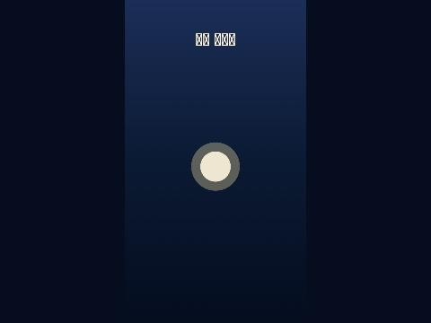

등대 지키기 작업 기록
0. 기획 (2026-10-20)
사용자: "이 게임은 여기까지 하고 다음엔 어떤 디펜스 게임을 만들면 좋을까? 지금과는 완전 다른 종류의 디펜스 게임이 좋겠는데" → 네 가지 중 "A로 하고 밤바다 등대를 지키는 바다 생물들 로 해서 새 폴더를 만들고 새 프로젝트로 하자."
결과 요약
| 질문 | 고른 것 |
|---|---|
| 종류 | A. 사방 로그라이크 디펜스 (가운데를 360도로 지키고, 웨이브마다 카드 3장 중 하나) |
| 테마 | 밤바다 등대를 지키는 바다 생물들 |
| 폴더·이름 | C:\lighthouse_defense · 등대 지키기 (Lighthouse Keepers) |
| 화면 | 웹(PWA) 세로 먼저 |
| 그림 | 숲 지키기처럼 Codex 카툰 + 컷아웃 |
| 공개 | 새 공개 저장소 + Pages 자동 배포 |
계획서 plan.md: 숲 지키기와 확실히 다르게 등대 빛을 손가락으로 끌어 돌리는 조작을 핵심으로 (빛 속의 어둠 생물은 느려지고 약해짐), 고리 자리(안쪽 6 · 바깥 12)에 친구, 빛 조각(경험치)으로 카드, 진주로 판 밖 성장, 밤 셋.
진행 방식
숲 지키기 마무리 뒤 같은 대화에서 질문 넷으로 방향을 정하고 계획서를 썼다.
검증
사용자 확인 대기.
발생한 문제와 해결
없음.
1. 프로젝트·저장소·자동 배포 (2026-10-20)
결과 요약
flutter create(웹·Windows), Flame 추가. 세로 720 × 1280 고정 해상도 판에 밤바다 그러데이션, 가운데 등대 자리(임시 원), 제목- 웹:
<title>·PWA 이름 "등대 지키기", 세로(portrait), 바다색 / Windows: 창 540 × 960, 제목 "등대 지키기" - 숲 지키기에서
make_todo_html.py,serve_web.py,dart_test.yaml, Pages 배포 설정을 가져와 이름·경로(/lighthouse-defense/)를 바꿈
진행 방식
| 파일 | 내용 |
|---|---|
lib/game/config.dart |
720 × 1280, 등대 자리 (360, 660), 바다색 |
lib/game/lighthouse_game.dart |
LighthouseGame(고정 해상도 카메라), 바다 바탕, 등대 자리, 제목 |
lib/main.dart |
판 하나 |
windows/runner/main.cpp |
세로 창, 한글 제목을 \uXXXX로 (소스는 ASCII여야 한다: /WX가 C4819를 오류로) |
.github/workflows/pages.yml |
main 푸시마다 테스트 → 웹 빌드(--base-href /lighthouse-defense/) → Pages |
검증
flutter analyze문제 없음,flutter test1/1,flutter build windows성공- 공개 저장소 https://github.com/Notard/lighthouse-defense 생성·푸시, Pages(GitHub Actions 방식) 켬 → 첫 배포 build·deploy 성공, https://notard.github.io/lighthouse-defense/ 200, 제목 "등대 지키기"
- 실제 사이트 화면: 세로 판·밤바다·등대 자리 확인. 한글 제목이 네모로 보임 (글꼴 없음,
--no-web-resources-cdn이라 대체 글꼴도 안 받음) → 3단계 글꼴에서

발생한 문제와 해결
- 창 제목을 한글 이스케이프로 넣으려 했는데 셸(heredoc)과 편집 도구가
\uB4F1을 실제 한글로 풀어 넣었다 (C++ 소스에 한글 → 빌드 실패) → 파이썬 스크립트 파일에서 바이트로 바꿔 넣음. 처음에는 주석이 조건문 괄호 안에 들어가기도 했다
1-1. 여러 에이전트 + 루프 엔지니어링 구조 (2026-10-20)
사용자 (역할 표와 함께): "본격적인 개발은 이렇게 나눠서 하고 루프 엔지니어링 개념을 네가 조사해와서 여러 에이전트가 일하고 루프 엔지니어링으로 하는 구조로 가자."
결과 요약
- 조사: 루프 엔지니어링 = 에이전트가 계획 → 변경 → 관찰 → 고침을 반복하도록 반복 구조(상태, 검증 관문, 끝내는 조건, 역할 분리, 상한, 사람 개입 지점)를 설계하는 일. 정리는 docs/loop.md
- 사용자 표를 Flutter 프로젝트에 맞게 옮김: implementer(
lib/·tools/) · tester(test/만) · balancer(tools/balance/·balance/, 표 숫자는 제안만) · reviewer(읽기만, 기본 거절) · 리드(문서·표·판단·커밋) - 한 바퀴: 리드 표 → tester(빨간 불) → implementer(최대 3번) → 관문 → (balancer) → reviewer → 리드 판단·커밋. 카드 하나 최대 3바퀴, 넘으면 사용자에게
진행 방식
| 파일 | 내용 |
|---|---|
docs/loop.md |
조사 요약(출처), 역할 표, 사람이 쓰는 것, 한 바퀴 그림, 상한·정지·자율성, 숲 지키기 교훈 → 관문 |
.claude/agents/{implementer,tester,balancer,reviewer}.md |
역할별 지시·범위·순서·보고 형식, 모델(Opus·Sonnet), reviewer는 Read·Grep·Glob만 |
loop/roles.json + tools/loop/gate.py |
역할별 고칠 수 있는 곳(allow)·금지(deny)·한 번에 30개 상한. git 변경 목록과 대조 |
tools/loop/check.sh |
관문 1 분석·테스트, 2 범위, 3 웹 빌드 |
loop/STATE.md, loop/run-log.md, loop/tasks/_template.md |
상태(정지 스위치 포함), 덧붙이기만 하는 기록, 작업 카드 틀 |
docs/design.md, docs/tests/README.md, data/tables/README.md, CLAUDE.md |
설계 정답 뼈대, 테스트 표 쓰는 법, 숫자 표 소유, 프로젝트 규칙 |
검증
gate.py지금 변경(리드 문서 15개): lead 통과, implementer·tester·reviewer 거절- 가짜 변경 10가지(역할마다 범위 안·밖): 모두 기대대로 통과/거절
발생한 문제와 해결
- 조사 자료 중 wikidocs 글은 403으로 읽지 못함 → 나머지 넷으로 정리. "backpressure"·
PROGRESS.md같은 말은 읽은 자료에 없어 쓰지 않음